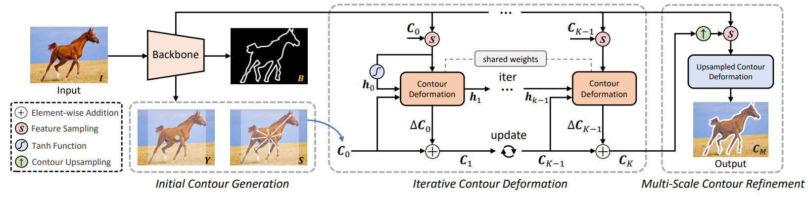
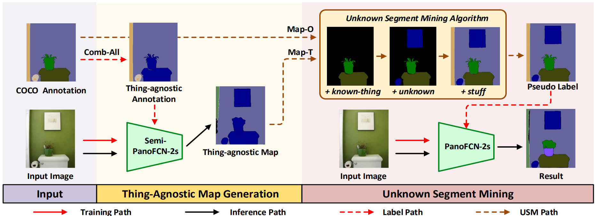
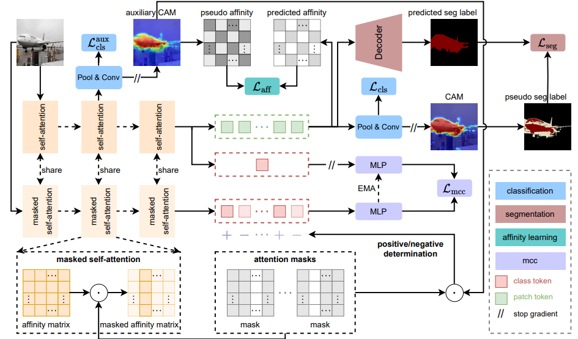
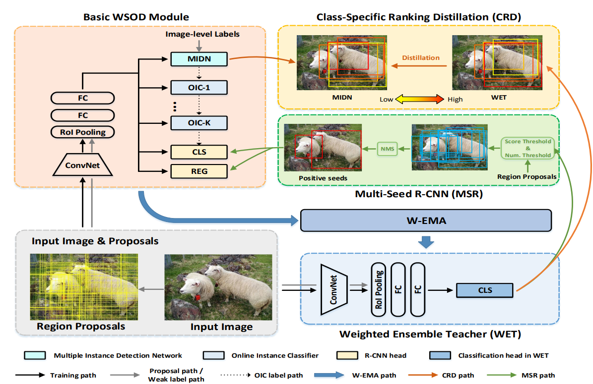
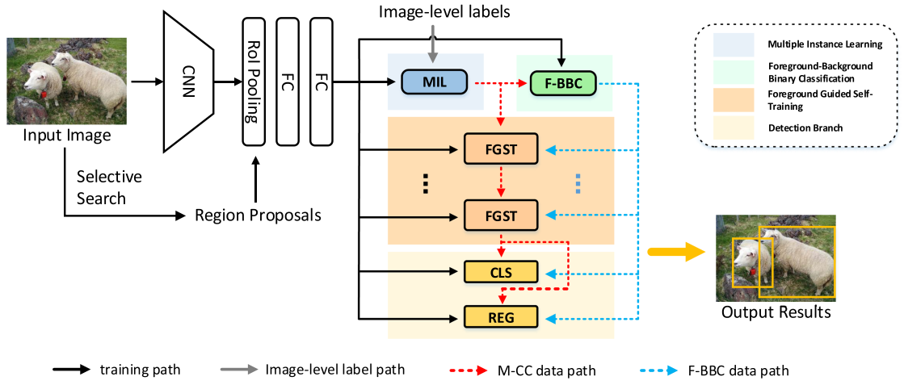
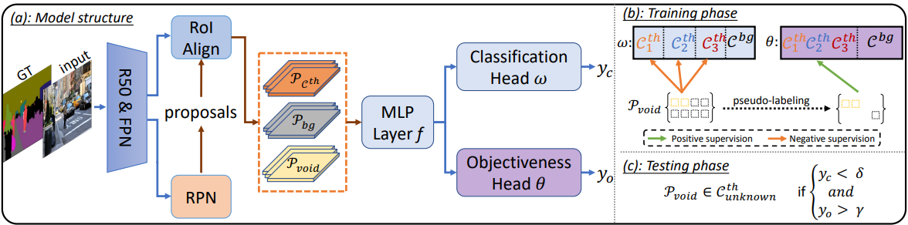
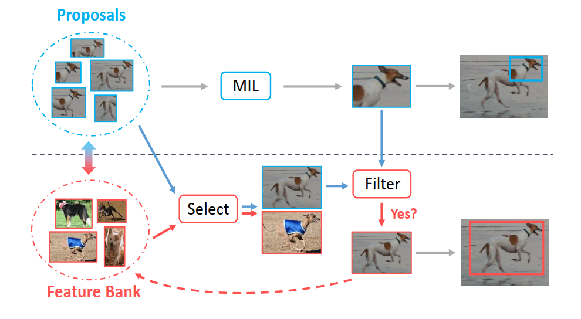

|
Yufei Yin 尹宇飞
Researcher Hangzhou Dianzi University, Zhejiang Email: yinyufei (at) mail.ustc.edu.cn |
I am currently a researcher in Hangzhou Dianzi University. I obtained both my Ph.D. degree (2024) and Bachelor degree (2019) in University of Science and Technology of China (USTC). My supervisors are Prof. Houqiang Li and Prof. Wengang Zhou. I have closely cooperated with Prof. Hao Chen and Dr. Jiajun Deng, both of whom I also regard as my advisors.
My research interests are in computer vision, and I am currently working on weakly-superevised object detection & segmentation, open-set object detection & segmentation and multi-modality understanding.
|

|
Hao Feng, Keyi Zhou, Wengang Zhou, Yufei Yin, Jiajun Deng, Qi Sun, Houqiang Li
Recurrent contour-based instance segmentation with progressive learning IEEE Transactions on Circuits and Systems for Video Technology (TCSVT), 2024. |
|

|
Yufei Yin, Hao Chen, Wengang Zhou, Jiajun Deng, Haiming Xu, Houqiang Li
Revisiting Open-Set Panoptic Segmentation AAAI Conference on Artificial Intelligence (AAAI), 2024 |
|

|
Fangwen Wu, Jingxuan He, Yufei Yin, Yanbin Hao, Gang Huang, Lechao Cheng
Masked Collaborative Contrast for Weakly Supervised Semantic Segmentation IEEE Winter Conference on Applications of Computer Vision (WACV), 2024 |
|

|
Yufei Yin, Jiajun Deng, Wengang Zhou, Li Li, Houqiang Li
Cyclic-bootstrap labeling for weakly supervised object detection IEEE International Conference on Computer Vision (ICCV), 2023. |
|

|
Yufei Yin, Jiajun Deng, Wengang Zhou, Li Li, Houqiang Li
FI-WSOD: Foreground information guided weakly supervised object detection IEEE Transactions on Multimedia (TMM), 2022. |
|

|
Hai-Ming Xu, Hao Chen, Lingqiao Liu, Yufei Yin
Two-stage decision improves open-set panoptic segmentation British Machine Vision Conference (BMVC), 2022. |
|

|
Yufei Yin, Jiajun Deng, Wengang Zhou, Houqiang Li
Instance mining with class feature banks for weakly supervised object detection AAAI Conference on Artificial Intelligence (AAAI), 2021. |
| Apr. 2023 - Oct. 2023 Research Intern, Zhejiang Lab |
| Oct. 2020 - Jul. 2021 Research Intern, Noah's Ark Lab |